Arrow & triangle glyph cipher — transcription and decipherment
Source: Reddit r/ciphers, “Need assistance with cipher”, posted by u/Tinman886. I could not open the thread (Reddit blocked every fetch), so everything here comes from the image alone.
Status: mostly read. The cipher is a one-glyph-per-letter substitution with word gaps and punctuation. Lines 1–16 and 21–23 read as continuous English (13 lines high confidence, 7 medium, 6 low); lines 17–20 and 24–26 are still partly or wholly unread, and three stretches are blacked out on the page.
The message is a taunt from the people who write the Pennsylvania mock-trial case, addressed to whoever decodes it: breaking the code gives no insight into the case.
1. Reading
1 PENNSYLVANIA MOCK TRIAL IS
2 AMAZING. [I]T IS GREAT FOR
3 STUDENTS, THE TEACHERS,
4 AND, AND, OF COURSE THE
5 LAW[,] LAWYERS INVOLVED.
6 [I]F YOU TH[R]OUGH BY BREAKING
7 THIS CODE, YOU WOULD GET INSIGHT
8 INTO THE CASE, YOU ARE
9 WRONG. BUT WE REALLY APPR-
10 ECIATE THE EFFORT IN TRYING.
11 PAUL AND [?] HAVE BEEN
12 WORKING ON THE CASE MATERIAL[S]
13 FOR GOING ON TWO DECADES
14 NOW. DO YOU REALLY THINK WE
15 WOULD GIVE AN ADV ADV[ANTA]GE
16 TO A TEAM BEC[A]USE THEY GOT
17 A SORKIN(?) WINGDING F?
18 ??L?O, MATE? E??? WITH THE?
19 S?I??I WE LOVE THAT S?I??I WE
20 LOVE ███ DID THIS. ? WE
21 OBSESS DEEPLY ABOUT MOCK TRIAL
22 AND WEST(?) AND MONTHS WITH THIS
23 PROBLEM. I ███
24 FROM THE MOU[NT]AINS TO THE ????
25 FROM THE ?R??K? ?? TO THE T?RK?,
26 MA? MA? ██ IS A WA?E IF YOU ?HAT
[ ] = letters I supplied where the drawn glyphs say something else or are missing, ? = unread, ███ = blacked out on the page, (?) = doubtful word.
As running text, for the part I trust:
Pennsylvania Mock Trial is amazing. It is great for students, the teachers, and, and, of course the law[,] lawyers involved. If you thought [written: through] by breaking this code, you would get insight into the case, you are wrong. But we really appreciate the effort in trying. Paul and [?] have been working on the case material[s] for going on two decades now. Do you really think we would give an advantage to a team because they got a … Wingding … with the… [unread] … we love that … we love ███ did this. … we obsess deeply about Mock Trial and … and months with this problem. I ███ … from the mountains(?) to the … [unread to the end].
Downloads: reading.txt, reading.json (reading, glyphs as re-read, and a note per line).
2. The image
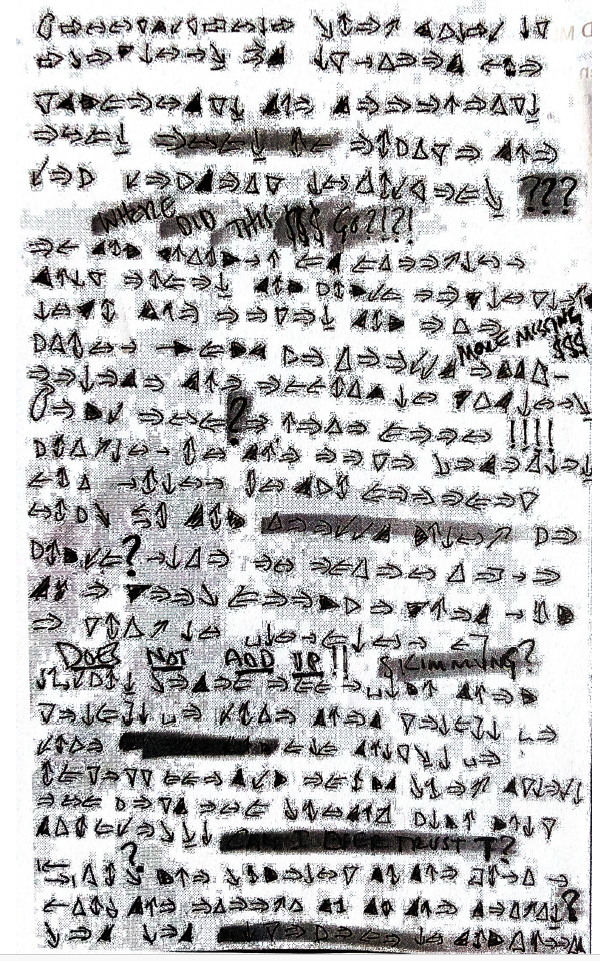
Handwritten additions (not cipher text): “WHERE DID THIS $$ GO?!?”, “???”, “MORE MISSING $$$”, “!!!!”, “DOES NOT ADD UP!!”, “SKIMMING?”, “CAN I EVER TRUST T?”, several single “?” marks, and black bars over parts of lines 4, 14, 20, 23 and 26. They have nothing to do with the decoded text as far as it is read.
3. How far to trust the reading
- It is a human reading guided by a solver. A statistical solver produced a rough decode (section 6); I then went through every line at roughly 6–14× magnification and re-read each glyph where the solver text broke a word.
- Inferred, not seen: which double-line right arrow ⇒ is A, C or E, and which left arrow ⇐ is B or D. I compared the three ⇒ of TEACHERS with those of DECADES and found no consistent visible difference at this resolution; the words fix them by context only.
- The writer made slips (or the drawing is loose): “FOE” for FOR, “EF” for IF, THROUGH where THOUGHT is meant, “ADV ADVAGE”, “BECUWE”, “MOUAINS”. The reading shows the intended word in brackets; the glyph row in section 5 shows what is drawn. Because of this, a doubtful glyph cannot always be settled by spelling.
- Filled triangles (T, P, U, Y, Z) differ mainly by orientation and shape, and I do not separate T from P reliably; context decides. “DEEPLY” (line 21) is my reading of an unclear word.
- Low-confidence lines are guesses at word level. “SORKIN”, “WINGDING”, “WEST” and “MOUNTAINS” are what the glyphs appear to spell, not words I can vouch for.
- I searched the web for several phrases and found no source text to check against.
4. Key
| letter | glyph | remarks |
|---|
| A, C, E | double-line right arrows ⇒ | three variants; I cannot tell them apart in this scan, chosen by context |
| B, D | double-line left arrows ⇐ | two variants, chosen by context |
| F | thin left arrow with open head ← | once ⇆ (FROM, line 24) |
| G | thin right arrow → | |
| H | up arrow ↑ | |
| I | down arrow ↓ | |
| K | ↗ | |
| L | ↙ | |
| M | short ↘, sometimes bent like ↳ | |
| N | double-headed horizontal arrow ↔ / ⇔ | my first pass often read it as ⇐, which produced “OD” for ON |
| O | double-headed vertical arrow ↕ | |
| P | filled ▲ (PROBLEM, APPRECIATE, DEEPLY); a hollow blob at the start of PENNSYLVANIA and PAUL | looks the same as T to me; the blob may be a capital |
| R | hollow △ | |
| S | hollow ▽ | |
| T | filled triangle | orientation varies (▲ ▼ ▶) |
| U | filled ▶ / half-disc | |
| V | leaning hollow triangle ◿ / ◁ | sometimes drawn like △ |
| W | hollow ▷ (“D” shape) | ⊔ acts as W in lines 17–20 |
| Y | tall filled right triangle ◢ | |
| Z | filled ◥ | AMAZING only |
| J, Q, X | not identified | unassigned glyphs: ↴ ↱ ◰ |
| punctuation | ↧ comma; long ↘ (often with a foot) full stop; – hyphen at line end; ➤ sentence break (line 9) | |
The layout looks systematic: A–F double-line arrows alternating right/left, G–I thin arrows, K–M diagonals, N–O double-headed arrows, P–W triangles (filled and hollow in four directions), X–Z right-angled triangles. Direction, line style and fill act as modifiers that expand a few base shapes into a full alphabet.
5. Line by line
For each line: the straightened strip from the image, the glyphs as I now read them (Unicode approximations), the reading, and what changed. “Earlier stages” shows my first-pass transcription and the solver output it led to.
line 1 — confidence: high
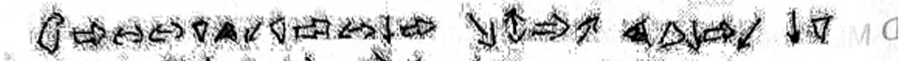
◯⇒↔↔▽▲↙◁⇒↔↓⇒ ↘↕⇒↗ ▲△↓⇒↙ ↓▽
PENNSYLVANIA MOCK TRIAL IS
Opening blob is P (same shape starts PAUL in line 11). 8th glyph is a hollow triangle (V), not ▽.
earlier stages of this line
first-pass transcription: ◯⇒↔↔▽▲↙▽⇒↔↓⇒ ↘↕⇒↗ ▲△↓⇒↙ ↓▽
codes: X R H H t A W t R H D R | S V R N | A a D R W | D t
solver output before the close reading: JENNSYLSENIC MOCK TRIAL IS
line 2 — confidence: medium
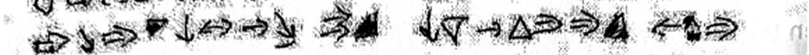
⇒↘⇒◥↓↔→↘ ⇒▲ ↓▽→△⇒⇒▲ ←↕⇒
AMAZING. [I]T IS GREAT FOR
Last glyph of the first word is the long ↘ = full stop. Second word is drawn ⇒▲ (“AT”/“ET”); IT is my guess at the intent. Last word is drawn F-O-⇒ (“FOE”); FOR intended.
earlier stages of this line
first-pass transcription: ⇒↘⇒▼↓↔→↘ ⇒▲ ↓▽→△⇒⇒▲ ←↕⇒
codes: R S R T D H r S | R A | D t r a R R A | l V R
solver output before the close reading: AMEPINGM AT ISGREET FOE
line 3 — confidence: high
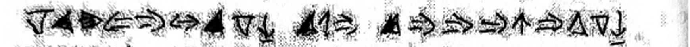
▽▲▶⇐⇒↔▲▽↧ ▲↑⇒ ▲⇒⇒⇒↑⇒△▽↧
STUDENTS, THE TEACHERS,
↧ (down arrow with a foot) = comma.
earlier stages of this line
first-pass transcription: ▽▲▶⇐⇒↔▲▽↧ ▲↑⇒ ▲⇒⇒⇒↑⇒△▽↧
codes: t A P L R H A t d | A U R | A R R R U R a t d
solver output before the close reading: STUDENTS. THE TEACHERS.
line 4 — confidence: high
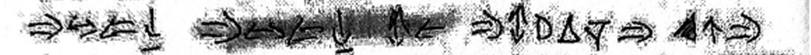
⇒↔⇐↧ ⇒↔⇐↧ [smear]← ⇒↕▷△▽⇒ ▲↑⇒
AND, AND, OF COURSE THE
A grey smear hides one or two glyphs before ← (the O of OF). The U of COURSE is drawn hollow (▷, normally W).
earlier stages of this line
first-pass transcription: ⇒↔⇐↧ ⇒↔⇐↧↕← ⇒↕▷△▽⇒▲↑⇒
codes: R H L d | R H L d V l | R V p a t R A U R
solver output before the close reading: AND. AND.OF COWRSATHE
line 5 — confidence: high
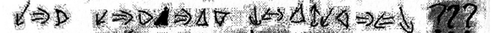
↙⇒▷ ↙⇒▷▲⇒△▽ ↓↔△↕↙◁⇒⇐↘
LAW[,] LAWYERS INVOLVED.
Final long ↘ = full stop (I had read it as ↓). First V of INVOLVED looks like △.
earlier stages of this line
first-pass transcription: ↙⇒▷ ↙⇒▷▲⇒△▽ ↓↔△↕↙◁⇒⇐↓
codes: W R p | W R p A R a t | D H a V W q R L D
solver output before the close reading: LAW LAWYERS INROLXEDI
line 6 — confidence: high
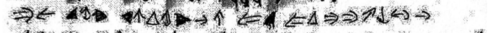
⇒← ▲↕▶ ▲↑△↕▶→↑ ⇐▲ ⇐△⇒⇒↗↓↔→
[I]F YOU TH[R]OUGH BY BREAKING
First word is drawn ⇒← (“EF”); THROUGH is what is written (THOUGHT fits the sentence). 7th glyph of BREAKING is ↔ (I had ←).
earlier stages of this line
first-pass transcription: ⇒← ▲↕▶ ▲↑△↕▶→↑ ⇐▲ ⇐△⇒⇒↗↓←→
codes: R l | A V P | A U a V P r U | L A | L a R R N D l r
solver output before the close reading: CF YOU THROUGH DT DREAKIFG
line 7 — confidence: high
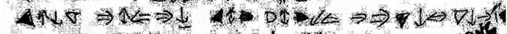
▲↑↓▽ ⇒↕⇐⇒↧ ▲↕▶ ▷↕▶↙⇐ →⇒▼↓↔ ▽↓→↑▲
THIS CODE, YOU WOULD GET INSIGHT
My first pass read ↘ for the ↓ in THIS. “GET IN|SIGHT” has a gap inside INSIGHT; its first glyph is the thin → (G) and its T is a filled ▼.
earlier stages of this line
first-pass transcription: ▲↑↘▽ ⇒↕⇐⇒↧ ▲↕▶ ▷↕▶↙⇐ ⇒⇒▼↓↔ ▽↓→↗▲
codes: A U S t | R V L R d | A V P | p V P W L | R R T D H | t D r N A
solver output before the close reading: THMS CODE. YOU WOULD CAPIN SIGKY
line 8 — confidence: high
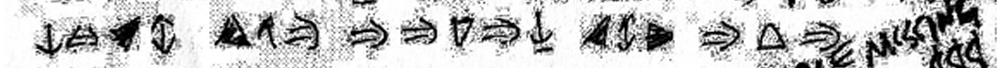
↓↔▲↕ ▲↑⇒ ⇒⇒▽⇒↧ ▲↕▶ ⇒△⇒
INTO THE CASE, YOU ARE
Second glyph of INTO is a closed ⇔-like shape I had read as △.
earlier stages of this line
first-pass transcription: ↓△▲↕ ▲↑⇒ ⇒⇒▽⇒↧ ▲↕▶ ⇒△⇒
codes: D a A V | A U R | R R t R d | A V P | R a R
solver output before the close reading: IRTO THE CASE. YOU ARE
line 9 — confidence: high
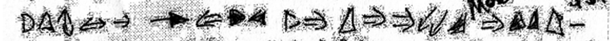
▷△↕↔→ ➤ ⇐▶▲ ▷⇒ △⇒⇒↙↙▲ ⇒▲▲△–
WRONG. BUT WE REALLY APPR-
WRONG is one word. ➤ (long thin arrow with a filled head) is not a letter – sentence break. BUT: ⇐=B, ▶=U, filled triangle=T. REALLY has two ↙ (I had one). The word is hyphenated to the next line.
earlier stages of this line
first-pass transcription: ▷△↕ ↔→ →⇐▶◀ ▷⇒△⇒⇒↙▲ ⇒▲▲△–
codes: p a V | H r | r L P Q | p R a R R W A | R A A a -
solver output before the close reading: WRO NG GDUB WEREALT ATTR.
line 10 — confidence: high
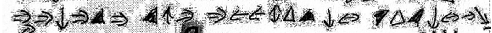
⇒⇒↓⇒▲⇒ ▲↑⇒ ⇒←←↕△▲ ↓↔ ▼△◢↓↔→↘
ECIATE THE EFFORT IN TRYING.
APPR-ECIATE. The two F are thin ← with an open head (I had ⇐). Ends with the long ↘ with a foot = full stop.
earlier stages of this line
first-pass transcription: ⇒⇒↓⇒▲ ⇒ ▲↑⇒ ⇒⇐⇐ ↕△▲ ↓↔ ▼△▲ ↓↔→↘
codes: R R D R A | R | A U R | R L L | V a A | D H | T a A | D H r S
solver output before the close reading: ACIET A THE ADD ORY IN PRY INGM
line 11 — confidence: medium
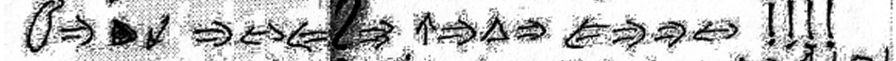
◯⇒▶↙ ⇒↔⇐ [?]⇒ ↑⇒△⇒ ⇐⇒⇒↔
PAUL AND [?] HAVE BEEN
A handwritten “?” covers what follows AND; one ⇒ is visible after it. HAVE is drawn H-⇒-△-⇒ with an upright △ (R-like). BEEN: last glyph is ↔.
earlier stages of this line
first-pass transcription: ◯⇒▶↙ ⇒↔⇐⇒ ↑⇒△⇒ ⇐⇒⇒⇐
codes: X R P W | R H L R | U R a R | L R R L
solver output before the close reading: JAUL ANDA HERE DEAD
line 12 — confidence: high
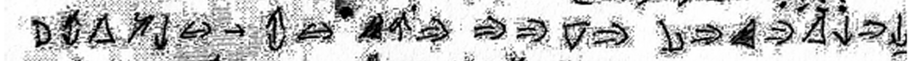
▷↕△↗↓↔→ ↕↔ ▲↑⇒ ⇒⇒▽⇒ ↳⇒▲⇒△↓⇒↧
WORKING ON THE CASE MATERIAL[S]
WORKING is one word. N of ON is the double-headed arrow. M here is the bent arrow ↳. The word ends at the page edge with ↧ (comma) or a cut-off glyph.
earlier stages of this line
first-pass transcription: ▷↕△↗↓ ↔→ ↕⇐ ▲↑⇒ ⇒⇒▽⇒ ↳⇒▲⇒△↓⇒↧
codes: p V a N D | H r | V L | A U R | R R t R | b R A R a D R d
solver output before the close reading: WORKI NG OD THE CASE ZETARIA.
line 13 — confidence: high
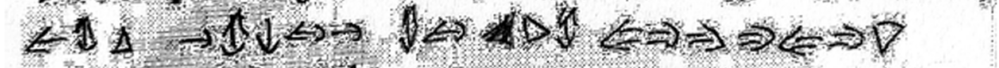
←↕△ →↕↓↔→ ↕↔ ▲▷↕ ⇐⇒⇒⇒⇐⇒▽
FOR GOING ON TWO DECADES
earlier stages of this line
first-pass transcription: ⇐↕△ →↕↓↔→ ↕⇐ ▲▷↕ ⇐⇒⇒⇒⇐⇒▽
codes: L V a | r V D H r | V L | A p V | L R R R L R t
solver output before the close reading: DOR GOING OD TWO DECADES
line 14 — confidence: high
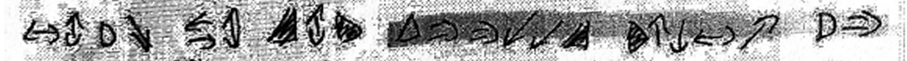
↔↕▷↘ ⇐↕ ▲↕▶ △⇒⇒↙↙▲ ▶↑↓↔↗ ▷⇒
NOW. DO YOU REALLY THINK WE
NOW + long ↘ (full stop). DO is two glyphs (I had three).
earlier stages of this line
first-pass transcription: ↔↕ ▷↘ ⇐⇒↕ ▲↕▶ △⇒⇒↙↙▲ ▶↑↓↔↗ ▷⇒
codes: H V | p S | L R V | A V P | a R R W W A | P U D H N | p R
solver output before the close reading: NO WM DEO YOU REALLY UHINK WE
line 15 — confidence: medium
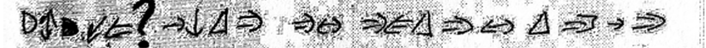
▷↕▶↙⇐ →↓◿⇒ ⇒↔ ⇒⇐◿ ⇒⇐◿⇒→⇒
WOULD GIVE AN ADV ADV[ANTA]GE
Written “ADV ADVAGE” – a false start and a shortened ADVANTAGE, as far as I can see. V is a leaning hollow triangle ◿.
earlier stages of this line
first-pass transcription: ▷↕▶↙⇐ →↓△⇒ ⇒↔ ⇒⇐△ ⇒⇐△⇒→⇒
codes: p V P W L | r D a R | R H | R L a | R L a R r R
solver output before the close reading: WOULD GIRE AN ADR ADRAGE
line 16 — confidence: medium
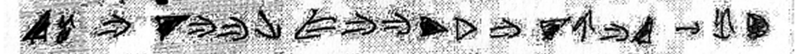
▲↕ ⇒ ▼⇒⇒↘ ⇐⇒⇒▶▷ ⇒ ▼↑⇒◢ → ↕▶
TO A TEAM BEC[A]USE THEY GOT
BECAUSE is drawn B-E-C-U-▷ + E (A missing, S drawn as ▷, a gap before the last E). THEY ends in the tall ◢ = Y. GOT: T drawn as a filled ▶-like triangle.
earlier stages of this line
first-pass transcription: ▲↕ ⇒ ▼⇒⇒↘ ⇐⇒⇒▶▷ ⇒ ▼↑⇒▲ → ↕▶
codes: A V | R | T R R S | L R R P p | R | T U R A | r | V P
solver output before the close reading: TO A PEAM DECUW A PHAT G OU
line 17 — confidence: low
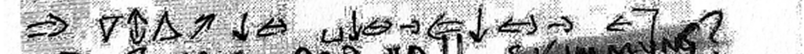
⇒ ▽↕△↗↓↔ ⊔↓↔→ ⇐↓↔→ ←↴
A SORKIN(?) WINGDING F?
S-O-R-K-I-N as drawn (WORKIN’ if the first triangle is a turned ▷). ⊔ acts as W here and in lines 18–20 (W is ▷ elsewhere). Last word is F + an unidentified corner arrow.
earlier stages of this line
first-pass transcription: ⇒ ▽↕△↗↓⇐ ⊔↓↔→ ⇐↓ ↔→ ⇐↱
codes: R | t V a N D L | u H r | L D | H r | L j
solver output before the close reading: A SORKID VNG DI NG D.
line 18 — confidence: low
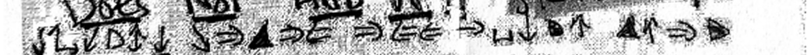
↓↳↙▷↕↧ ↘⇒▲⇒⇐ ⇒⇐⇐↳ ⊔↓ ▶↑ ▲↑⇒▶
??L?O, MATE? E??? WITH THE?
Partly under the “DOES NOT ADD UP” note. Only WITH (⊔↓ ▶↑, gap inside) and THE? are readable.
earlier stages of this line
first-pass transcription: ↓↳↙▷↕ ↧ ↘⇒▲⇒⇐ ⇒⇐⇐→ ⊔↓↓ ▲↑ ▲↑⇒▶
codes: D b W p V | d | S R A R L | R L L r | u D | A U | A U R P
solver output before the close reading: IZLWO . MATED ADDG VI TH THEU
line 19 — confidence: low
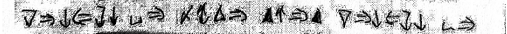
▽⇒↓⇐↴↓ ⊔⇒ ↙↕△⇒ ▲↑⇒▲ ▽⇒↓⇐↴↓ ⊔⇒
S?I??I WE LOVE THAT S?I??I WE
The repeated six-glyph word contains the unidentified ↴. LOVE is drawn with △ (LORE as drawn).
earlier stages of this line
first-pass transcription: ▽⇒↓⇐↳↓ ⊔↓⇒ ↙↕△⇒ ▲↑⇒▲ ▽⇒↓⇐↳↓ ⊔↓⇒
codes: t R D L b D | u R | W V a R | A U R A | t R D L b D | u R
solver output before the close reading: SAIDZI VE LORE THAT SAIDZI VE
line 20 — confidence: medium
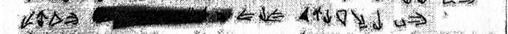
↙↕▷⇒ █ ⇐↓⇐ ▲↑↓▽↘ ↱ ⊔⇒
LOVE ███ DID THIS. ? WE
Black bar hides a word (a name?). LOVE is drawn with ▷ here. ↱ before WE is unidentified.
earlier stages of this line
first-pass transcription: ↙↕▷⇒ █ ⇐↓⇐ ▲↑↓▽↘↓ ⊔↓⇒
codes: W V p R | ? | L D L | A U D t S D | u R
solver output before the close reading: LOWE . DID THISMI VE
line 21 — confidence: medium
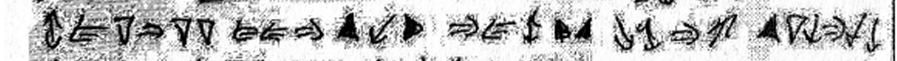
↕⇐▽⇒▽▽ ⇐⇒⇒▲↙▶ ⇒⇐↕▶▲ ↘↕⇒↗ ▲△↓⇒↙↓
OBSESS DEEPLY ABOUT MOCK TRIAL
My first pass split OBSESS in two. DEEPLY is my reading of ⇔⇐⇒▲↙▶ (2nd glyph points left). Final glyph after TRIAL unclear.
earlier stages of this line
first-pass transcription: ↕⇐▽⇒ ▽▽ ⇐⇐⇒▲↙▶ ⇒⇐↕▶◀ ↓↕⇒↗ ▲▽⇒↘↓
codes: V L t R | t t | L L R A W P | R L V P Q | D V R N | A t R S D
solver output before the close reading: ODSE SS DDAYLU ADOUB IOCK TSEMI
line 22 — confidence: medium
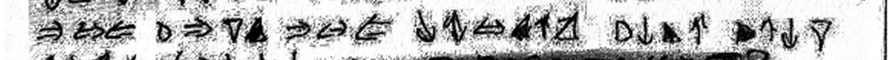
⇒↔⇐ ▷⇒▽▲ ⇒↔⇐ ↘↕↔▲↑▽ ▷↓▲↑ ▶↑↓▽
AND WEST(?) AND MONTHS WITH THIS
Second word is drawn W-E-S-T; WEEKS would fit the sentence. MONTHS: first glyph is ↘ (I had ↓).
earlier stages of this line
first-pass transcription: ⇒↔⇐ ▷⇒▽▲ ⇒↔⇐ ↓↕↔▲↑△ ▷↓▲↑ ▶▲↓▽
codes: R H L | p R t A | R H L | D V H A U a | p D A U | P A D t
solver output before the close reading: AND WEST AND IONTHR WITH UTIS
line 23 — confidence: high
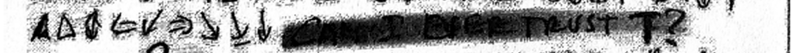
▲△↕⇐↙⇒↘↘ ↓ █
PROBLEM. I ███
P is a filled ▲. Second ↘ has a foot = full stop. The rest of the line is under a black bar.
earlier stages of this line
first-pass transcription: ▲△↕ ⇐↙⇒↘↧↓
codes: A a V | L W R S d D
solver output before the close reading: TRO DLEM.I
line 24 — confidence: low
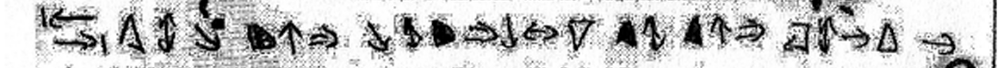
⇆△↕↘ ▶↑⇒ ↘↕▶⇒↓↔▽ ▲↕ ▲↑⇒ ◰?→△ →
FROM THE MOU[NT]AINS TO THE ????
First glyph ⇆ acts as F. “MOUAINS” as drawn. Last two words unread.
earlier stages of this line
first-pass transcription: ⇆△↕↘ ▶↑⇒ ↘↓▶⇒↓↔▽ ▲↕ ▲↑⇒ ◁↕→△ →
codes: E a V S | P U R | S D P R D H t | A V | A U R | q V r a | r
solver output before the close reading: .ROM UHE MIUAINS TO THE XOGR G
line 25 — confidence: low
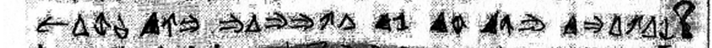
←△↕↘ ▲↑⇒ ⇒△⇒⇒↗△ ▲↑ ▲↕ ▲↑⇒ ▲⇒△↗◿↧
FROM THE ?R??K? ?? TO THE T?RK?,
The two long words are unread (CREEKS? TREKS?).
earlier stages of this line
first-pass transcription: ←△↕▽ ▲↑⇒ ⇒△⇒⇒↗△ ▲↑ ▲↕ ▲↑⇒ ▲⇒△↗△↧
codes: l a V t | A U R | R a R R N a | A U | A V | A U R | A R a N a d
solver output before the close reading: FROS THE CREAKR TH TO THE TERKR.
line 26 — confidence: low
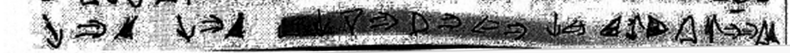
↘⇒▲ ↘⇒▲ █↓▽⇒ ▷⇒←⇒ ↓← ▲↕▶ △↑⇒▲
MA? MA? ██ IS A WA?E IF YOU ?HAT
Part of the line is under a bar.
earlier stages of this line
first-pass transcription: ↘⇒▲ ↘⇒▲ ↓▽⇒▷⇒⇐⇒ ↓← ▲↕▶ △↑⇒▲
codes: S R A | S R A | D t R p R L R | D l | A V P | a U R A
solver output before the close reading: MAY MAY ISCWADE IF YOU RHAT
6. How it was found
6.1 First pass: transcription and a failed attack
I segmented the page (connected components at 4× upscale, line tracking, per-line straightening) and transcribed 543 glyphs in 24 classes by eye, with visible gaps as chunk breaks (139 chunks). A substitution solver that scored the text without word breaks (5-gram model) found ▲↑⇒ = THE but only 7% of its output fell into common words, against 54% for a clean English substitution of the same size. One class, the double-line right arrow ⇒, made up 22% of all glyphs — too many for any single English letter. At that stage I reported the cipher as not deciphered.
First-pass glyph classes (24 classes; several are now known to merge or confuse letters)
| glyph | code | description | count | share |
|---|
| ⇒ | R | double-line arrow pointing right (looks like an outlined block arrow) | 121 | 22.1% |
| ▲ | A | filled triangle, apex up (often drawn as a right-angle ◢) | 57 | 10.4% |
| ⇐ | L | double-line arrow pointing left | 42 | 7.7% |
| ↕ | V | double-headed vertical arrow | 41 | 7.5% |
| ↓ | D | arrow pointing down | 40 | 7.3% |
| △ | a | hollow triangle, apex up | 35 | 6.4% |
| ▽ | t | hollow triangle pointing down | 27 | 4.9% |
| ↔ | H | double-headed horizontal arrow | 24 | 4.4% |
| ↑ | U | arrow pointing up | 24 | 4.4% |
| ▶ | P | filled triangle pointing right | 20 | 3.7% |
| → | r | thin single-line arrow pointing right | 19 | 3.5% |
| ▷ | p | hollow triangle pointing right (drawn like a “D”) | 17 | 3.1% |
| ↙ | W | diagonal arrow pointing down-left | 16 | 2.9% |
| ↘ | S | diagonal arrow pointing down-right | 15 | 2.7% |
| ↧ | d | down arrow with a foot / underline (⊥) | 10 | 1.8% |
| ↗ | N | diagonal arrow pointing up-right | 9 | 1.6% |
| ← | l | thin arrow pointing left | 6 | 1.1% |
| ⊔↓ | u | down arrow rising from a cup (⊔) | 5 | 0.9% |
| ▼ | T | filled triangle pointing down | 5 | 0.9% |
| ↳ | b | down stroke that hooks right (L-shaped) | 4 | 0.7% |
| ◀ | Q | filled triangle pointing left | 2 | 0.4% |
| ◁ | q | hollow triangle pointing left | 2 | 0.4% |
| ◯ | X | large hand-drawn oval/blob (only at the start of two lines) | 2 | 0.4% |
| ⇆ | E | two stacked opposite arrows (⇆) | 1 | 0.2% |
| ↱ | j | 7-shaped hook after a left arrow | 1 | 0.2% |
| – | - | short horizontal dash | 1 | 0.2% |
| █ | ? | hidden under a black redaction bar | 1 | 0.2% |
Machine-readable first-pass transcription: transcript.json, transcript.txt, transcript_unicode.txt. It contains the misreads listed in section 5; reading.json has the corrected glyphs.
6.2 Word-aware scoring
The chunk lengths follow English word lengths (1–2–3–4 glyphs = 6%, 20%, 22%, 20% of chunks), so I treated gaps as word breaks and scored with a word-aware character 4-gram model (spaces included, ~85,000 words of English, interpolated smoothing). With that change alone a plain glyph→letter substitution scores about 270 log-units above shuffled controls (26σ) and words such as MOCK, TRIAL, WOULD, THROUGH appear. A planted substitution of the same size is recovered 100% by this solver.
6.3 Arrows as movements in a substitution grid — ruled out
Model: each word starts at a home cell, every glyph moves a cursor, and the cell reached is the letter.
- Shape-derived moves, grid layout solved for (576 hypotheses): direction from the glyph, step length 1 or 2 per glyph style (double-line / thin / foot / filled / hollow), ↔↕ = stay, mirror or two cells; grids 5×5 (torus and clamped), 6×4, 4×6 clamped, 3×8, 2×13. The 8 best raw scores and the best of each grid, each against 8 shuffled streams through the same walk (gap = real minus control mean, log-units):
| hypothesis | cells used | real | control mean | gap |
|---|
| 6×4 torus, steps 2/2/1/2/2, ↔↕ two cells | 9 | −1952 | −1973 | 21 |
| 6×4 torus, 2/2/1/2/2, ↔↕ two cells (variant) | 14 | −1964 | −1999 | 35 |
| 2×13 torus, all 1, ↔↕ mirror | 19 | −2007 | −2017 | 11 |
| 2×13 torus, 1/1/2/1/1, ↔↕ mirror | 20 | −2019 | −2042 | 23 |
| 6×4 torus, 2/2/1/2/2, ↔↕ mirror | 23 | −2032 | −2118 | 86 |
| 2×13 torus, 1/2/2/2/2, ↔↕ two cells | 17 | −2038 | −2099 | 61 |
| 3×8 torus, 2/2/1/2/2, ↔↕ two cells | 20 | −2052 | −2101 | 50 |
| 6×4 torus, 1/2/1/2/2, ↔↕ two cells | 22 | −2041 | −2089 | 48 |
| 5×5 clamped, all 1, ↔↕ two cells | 21 | −2109 | −2154 | 45 |
| 4×6 clamped, 2/2/1/2/2, ↔↕ two cells | 20 | −2072 | −2117 | 45 |
| 5×5 torus, all 2, ↔↕ two cells | 25 | −2163 | −2164 | 2 |
The best gap is 86 (3.7σ before correcting for 576 tries) against ~270 for one letter per glyph. The models with the highest raw scores use only 9–14 cells and win by producing low-variety text.
- Free displacements on a fixed standard layout (Polybius 5×5 without J or without Q, 2×13 alphabet, 26-ring forward and reversed, QWERTY-like 3×9): unrestricted, the optimum is degenerate (“AAAAAAA AHHH”); with zero displacement forbidden the output is repetitive junk (“HAHAHO”, “PETIXIXM”), gaps 12–85.
- Caveat: a planted grid-walk cipher is recovered ~86% when the layout is known and not at all when steps and layout are both free, so the fully free variant is only weakly tested.
6.4 Modifiers expanding a smaller alphabet — supported
Model: a glyph class is a base shape, and each occurrence carries a modifier I did not transcribe that selects one of k letters. The solver picks a hidden sub-class for every occurrence of a chosen class, together with the letter table.
| model | score | shuffled controls | gap | dictionary letters, real | …controls |
|---|
| one letter per glyph class | -1971 | -2240 ± 10 | 269 | 14.6% | 2.3% (max 3.8%) |
| ⇒ split 3 ways | -1754 | -2092 ± 11 | 338 | 23.3% | 4.5% (max 6.2%) |
| ⇒ split 3 ways, ▲ split 2 ways | -1702 | -2074 ± 7 | 373 | 27.8% | 4.2% (max 6.6%) |
| ⇒ ×3, ▲ ×2, ⇐ ×2 | -1661 | -2041 ± 7 | 380 | 27.6% | 4.9% (max 7.3%) |
- ⇒ = three letters (A, E, C): the gap grows by 69 beyond what controls gain from the extra freedom, dictionary coverage rises from 15% to 23%, and a fourth sub-class adds nothing. TEACHERS is ▲⇒⇒⇒↑⇒△▽, so its three ⇒ must be E, A, C.
- ▲ = two letters (T, Y): gain 52 against 18 in controls; “TOU” (▲↕▶, five times) becomes YOU.
- ⇐ split in two: no better than controls in this test. The close reading later showed why: ⇐ is B and D, and many of my “⇐” were the double-headed N.
The solver output at this stage is in solver_decode.txt / solver_decode.json (about a third of its letters were wrong). Montages of 92 wide arrow glyphs, made while looking for the visible difference between the ⇒ variants: a, b.
6.5 Close reading
With readable fragments in hand I re-read every line against the image. Most remaining errors were mine, not the cipher’s: ↔ read as ⇐ (which gave “OD” for ON), ↓ read as ↘, wrong triangle orientations, word gaps placed inside WORKING / WRONG / INSIGHT, and two punctuation marks (comma ↧, full stop long ↘) read as letters. The result is section 1.
7. Still open
- Lines 17–20: the repeated word ▽⇒↓⇐↴↓, the glyphs ↴ ↱ ⊔, and most of line 18.
- Lines 24–26: the words after “TO THE” and the last line.
- The visible difference between A, C and E (and between B and D).
- A sharper scan would settle most of these; so would the original poster’s key or the thread text.
8. Files
- reading.txt, reading.json — current reading per line with corrected glyphs and notes.
- transcript.json, transcript.txt, transcript_unicode.txt — first-pass transcription (codes and Unicode), kept as the solver input.
- solver_decode.txt, solver_decode.json — solver output with inferred sub-classes.
img/ — straightened line strips and arrow montages; original.png — the source image.work/ — first-pass scripts (segmentation, line tracking, spaceless solver; build_report.py there built the first version of this page and is no longer used).work2/ — make_lm2.py (word-aware 4-gram model), wsolve.c and wsplit.c (solvers), enum_walk.py, null_walk.py, free_walk.py (movement tests), scan2.py, evidence.py, run4.py, final_decode.py (modifier tests and solver decode), synth.py, synth2.py (planted-cipher checks), reading_data.py + build_index.py (this page). The language-model file and binaries are not kept: run make_lm2.py and cc -O3 -o wsplit wsplit.c -lm inside work2/.- Credit: cipher image and puzzle by u/Tinman886 on r/ciphers (thread).